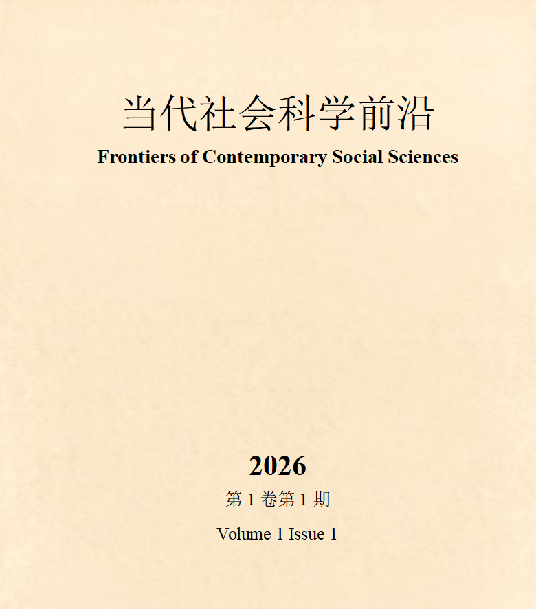

当代社会科学前沿
Frontiers of Contemporary Social Sciences
首页
期刊介绍
编委会
投稿指南
联系我们
ISSN：（待填）
eISSN：（待填）

投稿邮箱：ddshkxqy@126.com
2026年第1卷 第1期（半年刊）
数字社会与新质生产力
新质生产力赋能中华优秀传统文化智慧出版研究——基于“十五五”规划的数字化战略视角 刘婷
点击下载 PDF
教育数字化与心理研究
人机协同备课对教师教学创新的机遇、挑战与对策 陈祖珍
点击下载 PDF
东盟一体化背景下菲律宾高等教育SWOT分析 秋丽丽 谭仕碧
点击下载 PDF
制度理论与社会治理
地方高校更名大学的逻辑、困境与路径——基于治理依赖视角 邱富群
点击下载 PDF
符号建构：“学院”向“大学”转型的存在论反思 田长云
点击下载 PDF